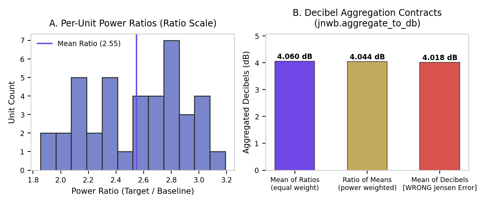
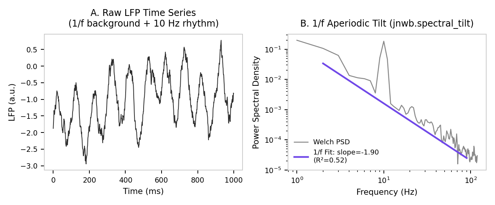
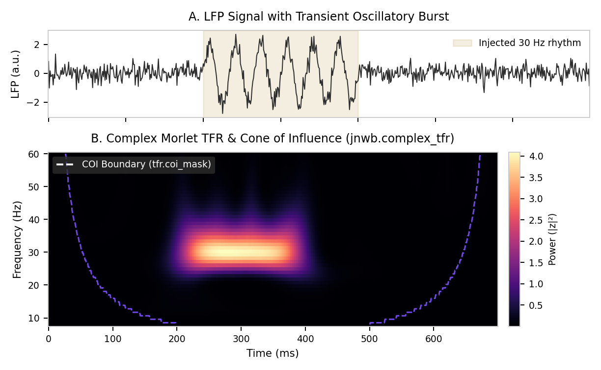

04. Spectral Analysis, Coherence & Time-Frequency Representations (TFR)¶
This document details spectral power estimation, time-frequency decomposition, cross-area coherence, memory-efficient accumulation, coordinate-explicit band extraction, and decibel transformations in jnwb.
1. Canonical Frequency Bands & Spectral Decomposition (jnwb.spectral)¶
jnwb.spectral provides standard tools for computing spectral power density, cross-spectral density, coherence, and referencing.
Canonical Frequency Bands (CANONICAL_BANDS)¶
Unless customized by the user, jnwb standardizes frequency bands across modules:
import jnwb
bands = jnwb.CANONICAL_BANDS
# Default:
# - theta: (4.0, 8.0) Hz
# - alpha: (8.0, 14.0) Hz
# - beta: (14.0, 30.0) Hz
# - low_gamma: (30.0, 50.0) Hz
# - high_gamma: (50.0, 80.0) Hz
Power Spectral Density (compute_psd, compute_multitaper_psd) & Band Power (band_power)¶
# Compute Welch PSD (returns frequencies and psd arrays)
freqs, psd = jnwb.compute_psd(lfp_trace, fs=1000.0)
# Compute DPSS multitaper PSD with explicit energy normalization
# nw: time-half-bandwidth product; k_tapers defaults to int(2*nw - 1)
freqs_mt, psd_mt = jnwb.compute_multitaper_psd(lfp_trace, fs=1000.0, nw=3.0, k_tapers=5)
# Extract scalar mean power in a specific frequency range (e.g. beta: 14-30 Hz)
beta_power_val = jnwb.band_power(lfp_trace, fs=1000.0, freq_range=(14.0, 30.0))
Decibel Formation (aggregate_to_db, to_db, DB_AGGREGATIONS)¶
Take the logarithm last. Form the per-unit ratio P / P0, aggregate the ratios, and
convert once. Averaging decibels is a Jensen error -- mean(log x) != log(mean x) -- and it
biases every unit by its own noisiness, so a noisier channel is pulled toward a different
answer than a quiet one measuring the same effect.
to_db(ratio) is the bare conversion and cannot enforce anything: by the time a caller holds
decibels, the mistake is already available. aggregate_to_db is the enforcing form -- it owns
the whole ratio-aggregate-log sequence, so the correct order is the only order reachable
through it.
# power, baseline: (n_units, n_trials), ratio-scale and non-negative
db = jnwb.aggregate_to_db(power, baseline, how="mean_of_ratios", aggregate_over=1)
# Element-wise conversion, no aggregation -- still logs exactly once
db_per_trial = jnwb.aggregate_to_db(power, baseline, how="mean_of_ratios")
how has no default, on purpose. The two members of DB_AGGREGATIONS are different
estimands, not implementation details:
how |
Estimand | Weighting |
|---|---|---|
"mean_of_ratios" |
mean of each unit's own ratio | every unit counts equally |
"ratio_of_means" |
summed power over summed baseline | each unit weighted by its baseline power |
They coincide only when the baseline is constant across the aggregated axis. In general
sum_c P_c / sum_c P0_c = sum_c w_c (P_c / P0_c) with w_c = P0_c / sum_j P0_j, so
"ratio_of_means" is a baseline-weighted version of the very same per-unit ratios. A silent
default would pick one of these for you.
Geometric mean is deliberately rejected rather than offered as a third option, because
10*log10(geomean(r)) is identically mean(10*log10(r)) -- it is mean-of-decibels wearing a
respectable name. Passing how="geomean" raises and says so.
Negative input raises. Ratio-scale power is non-negative by definition, whereas decibel arrays routinely carry negative values, so handing decibels to this function usually fails loudly instead of returning a plausible wrong number. Treat that as a guard, not a proof: an all-positive decibel array is indistinguishable from power by inspection, so the contract still stands -- pass power and baseline, never decibels.
nan_policy="omit" aggregates over non-NaN entries only. Artifact repair legitimately leaves
NaNs behind, so this is a real choice, but never a silent one.

Spectral Tilt, Harmonic Analysis & Referencing¶
# Estimate 1/f spectral tilt / exponent
tilt_res = jnwb.spectral_tilt(lfp_trace, fs=1000.0, freq_range=(1.0, 100.0))
# Harmonic distortion analysis
harmonics = jnwb.harmonic_analysis(lfp_trace, fs=1000.0, harmonic_orders=3)
# Spatial referencing schemes
bipolar_data = jnwb.bipolar_reference(lfp_multichannel)
laplacian_data = jnwb.laplacian_reference(lfp_multichannel)
# 1D Voltage Curvature (d2V/dz2 in V/m^2) and Current Source Density (CSD in A/m^3)
# lfp_probe: (n_channels, n_times) in Volts, ordered along probe depth
curv = jnwb.voltage_curvature_1d(lfp_probe, pitch_um=100.0, axis=0)
# CSD requires explicit extracellular conductivity (e.g. 0.3 S/m for cortex)
csd = jnwb.current_source_density_1d(lfp_probe, pitch_um=100.0, conductivity_s_per_m=0.3, axis=0)
Digital Filtering (bandpass_filter, notch_filter)¶
Zero-phase (zero_phase=True, acausal forward-backward) and causal (zero_phase=False) filtering via Second-Order Sections (SOS):
# Zero-phase Butterworth bandpass filter (14-30 Hz beta band)
beta_lfp = jnwb.bandpass_filter(lfp_trace, fs=1000.0, low_cut=14.0, high_cut=30.0, order=4, zero_phase=True)
# 60 Hz line-noise notch filter
clean_lfp = jnwb.notch_filter(lfp_trace, fs=1000.0, freq=60.0, q=30.0, zero_phase=True)

2. Cross-Area Coherence & Imaginary Coherency¶
Cross-Area Coherence (cross_area_coherence)¶
Quantifies frequency-resolved phase synchronization between two LFP signals:
coh_dict = jnwb.cross_area_coherence(
lfp_area1,
lfp_area2,
fs=1000.0,
freq_bands=jnwb.CANONICAL_BANDS
)
# Returns dict containing:
# - 'band_coherence': Dict[band_name -> float]
# - 'coherence_spectrum': np.ndarray (frequency-by-frequency coherence values)
# - 'frequencies': np.ndarray
Imaginary Coherency (imaginary_coherency)¶
Computes imaginary coherency to eliminate volume conduction / zero-lag field spread artifacts:
imag_coh = jnwb.imaginary_coherency(
lfp_area1,
lfp_area2,
fs=1000.0,
freq_range=(15.0, 30.0)
)
3. High-Level Analyzers (jnwb.analyzers)¶
jnwb.analyzers provides object-oriented interfaces for analyzing session data:
TFRAnalyzer: Time-frequency analysis and coordinate-explicit band extraction.UnitAnalyzer: Single-unit spike train autocorrelation and quality metrics.PopulationAnalyzer: Multi-unit population PSTH and cross-condition comparisons.
Coordinate-Explicit Band Extraction (TFRAnalyzer.extract_band)¶
Requires explicit physical frequency coordinates (freqs) and validates frequency axis alignment:
from jnwb.analyzers import TFRAnalyzer
# tfr_data: (n_channels, n_freqs, n_times)
# freqs: (n_freqs,) exact physical frequency coordinates in Hz
beta_power = TFRAnalyzer.extract_band(
tfr_data,
band="beta",
freqs=freqs,
freq_axis=1
)
4. Decibel Transformation (to_db) & Estimand Considerations¶
jnwb.to_db(ratio) computes \(10 \log_{10}(\text{ratio})\).
Estimand Aggregation Notice¶
For baseline-normalized relative power estimands: $\(\text{RelPower}(f, t) = \frac{\bar{P}_{\text{response}}(f, t)}{\bar{P}_{\text{baseline}}(f)}\)\( \)\(\text{Decibels}(f, t) = 10 \log_{10}\left(\text{RelPower}(f, t)\right) = \text{jnwb.to\_db}(\text{RelPower})\)$
Design Note: In relative power analyses, averaging raw power across trials before computing the ratio and applying
to_dbonce at the end preserves the arithmetic mean of physical power.jnwbsupplies the mathematical primitiveto_dbwithout enforcing a fixed aggregation pipeline on arbitrary workflows.
5. Complex Morlet Time-Frequency Representations & Accumulation¶
Complex Morlet Transform Primitive (complex_tfr, morlet_wavelet)¶
jnwb.complex_tfr computes complex time-frequency coefficients via Morlet wavelets with discrete \(L_1\) amplitude normalization:
import jnwb
import numpy as np
# raw_lfp: (n_channels, n_times)
freqs = np.linspace(10.0, 60.0, 11) # 10 to 60 Hz in 5 Hz steps
# Compute complex coefficients with Cone of Influence (COI) mask
tfr_res = jnwb.complex_tfr(
data=raw_lfp,
fs=1000.0,
freqs=freqs,
n_cycles=5.0,
normalization="amplitude" # unit cosine yields peak |z| = 1.0
)
# Returns ComplexTFR dataclass:
# - tfr_res.z: np.ndarray, complex (n_channels, n_freqs, n_times)
# - tfr_res.coi_mask: np.ndarray, bool (n_channels, n_freqs, n_times)
# - tfr_res.power: np.ndarray (|z|^2)
# - tfr_res.phase: np.ndarray (angle in radians)
# - tfr_res.amplitude: np.ndarray (|z|)

Streaming TFR Accumulation (TFRAccumulator) & Compression (compress_fp32)¶
TFRAccumulator&assert_mergeable(jnwb.tfr_accumulator): Accumulates running sums and sum-of-squares across streaming trials (add_trial(tfr_res.z, valid=tfr_res.coi_mask)) without storing complete trial tensors in RAM.compress_fp32(jnwb.compression): Compresses high-dimensional single-precision floating point arrays into quantized representations.